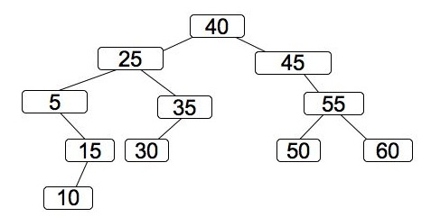
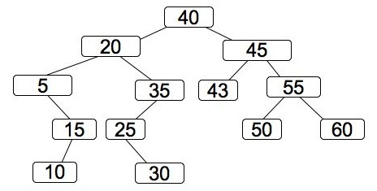
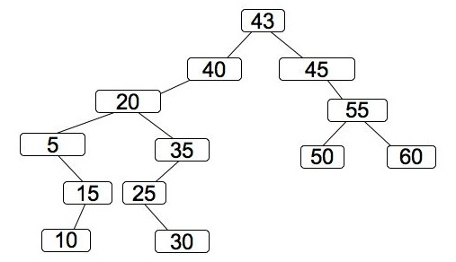
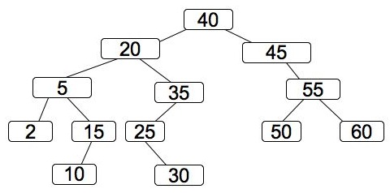
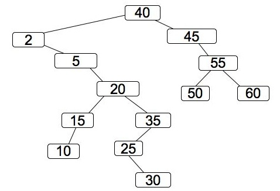
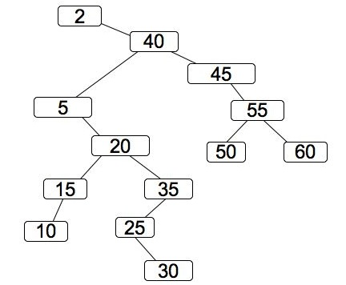

CS140 Final Exam: December 11, 2006 - Answers
Question 1: 8 points
- a: 24 mod 16 is 8, and entry 8 is empty. The answer is 8. (1 point)
- b: 42 mod 16 is 10. Since entry 10 is filled, we search
consecutive entries until we find a free one: 11. (1.5 points)
- c: 30 mod 16 is 14. Since entries 14 through 0 are filled,
the answer is 1. (1.5 points)
- d: Obviously, zero is possible. So is 15 ("Le vent"
could have been in the table when "Anacapri" was entered), and
14 (both "Danseuses" and
"Le vent" could have been there). Thus, 0, 15, 30 and 175 are
all potential hash values (30 mod 16 is 14, and 175 mod 16 is 15).
163 and 45 are not possible hash values. (2 points: 0.33 point per
correct subpart)
- e: 15 is filled, so you try (15+1*1)%16 = 0. That is filled,
so you try (15+2*2)%16 = 3 -- also filled. Finally, you try `
(15+3*3)%16 = 8. That's empry, so the answer is 8. (2 points).
Question 2: 6 points
- a: Vein Wake His In In Earth He Leaves Scorched Work And. (3 points)
- b: In His Wake He Leaves Scorched Earth And Work In Vein. (3 points)
Question 3: 4 Points
The answer is p. Straight from the definition of big-O. The
answers with b and n0 are meaningless since neither
is assigned a value. All of the rest of the answers are false, with the
exception of a, g and m. Unfortunately those would prove
that g(n) = O(f(n)).
Grading: 4 points for p. 2 points each for j, x and v.
1.5 points for for d, l,r and o. 1 point for
f. Zero for the rest.
Question 4: 8 points
First, I would check whether it is a binary search tree. In other words, each
node has at most two children. All nodes in the subtree rooted by a node's left
child have keys less than the node, and all nodes in the subtree rooted by a node's
right child have keys greater than the node. All subtrees of the tree are AVL
trees. Finally, the heights of the two subtrees of a node must be equal or must
differ by one.
We like AVL trees because find and insert operations on AVL trees with n
nodes take O(log n) time.
Grading: 8 points, allocated as follows:
- Binary search tree: 2 points.
- All subtrees are AVL trees: 2 points
- Heights of subtrees differ by at most one: 2 points.
- All operations on trees of size n take O(log n)
time: 2 points. I wanted a more precise answer here than "the
tree is balanced." What does that mean?
Question 5: 7 points
a: Since 20 has two children, you must find the smallest node in
the right subtree, delete it, and replace 20 with it. This is pictured
below. Equivalently, you could find the largest node in the left
subtree (15), delete it, and replace 20 with it.

Grading: 2 points for this one.
b: First you insert 43 as if the tree were a regular binary
search tree:

Then you splay it -- this is a zig-zag splaying, which means you
rotate twice about 43. Here is the final tree:

Grading: 2 points for this one. 1 point if you had 43 at the top
of the tree, but didn't rotate correctly.
c: First you insert 2 as if the tree were a regular binary
search tree:

Then you splay it. First, you do a zig-zig splaying, which means
you rotate 5, then rotate 2:

Finally, since 2's parent is the root, you do a single rotation about 2:

Grading: 3 points for this one. 1 points if you had 2 at the top
of the tree, but didn't rotate correctly.
Question 6: 9 points
This one is straight from the in-class labs. It requires a recursive, postorder
traversal: Find out the height of each of your children -- return the maximum of
these plus one. You must have two
procedures -- one to find the height, and one to print it:
int height(Tree *t)
{
Dllist tmp;
int h, mh;
Tree *c;
mh = 0;
dll_traverse(tmp, t->children) {
c = (Tree *) tmp->val.v;
h = height(c);
if (h > mh) mh = h;
}
return mh+1;
}
void print_height(Tree *t)
{
printf("%5d\n", height(t));
}
Grading
- Having two procedures -- one recursive, one that prints: 1 point
- Having the correct printf(): 1 point
- Traversing children: 1 point
- Doing the correct typecast: 1 point
- Recursive call: 1 point
- Calculating the max height: 1 point
- Returning that plus one: 1 point
- Working correctly when children is empty: 1 point
- No extraneous mess with key, val or other stuff: 1 point
Random Extra Credit Question
The postorder traversal is from the
song "Scorched Earth" by Van Der
Graaf Generator (or Peter Hammill). A dark song, full of brooding intensity, from the 1970's, most
likely relegated to obscurity as I don't see it listed in itunes. Besides having a great section
in 5/4 time, Hamill works vocabulary words such as "spoor" and "ambuscade" into the lyrics....
Yes, "vein" is not spelled correctly....
Guesses from the class, in order from best to worst:
- Black Sabbath (3 Answers) - No doubt during a time when Pat Boone was not his neighbor,
Ozzy could have penned lyrics such as these. But he didn't.
- Tool Can't say I know anything about Tool, but after reading their blurb
on allmusic.com, they certainly sound fitting.
- Jefferson Airplane I could see these lyrics coming from After Bathing At Baxters
(an excellent, albeit weird album), or maybe from the lame Crown of Creation
album. Not a bad guess.
- Metallica again, not inappropriate, but also not correct.
- Jimi Hendrix Hendrix was more psychedelic than nasty. Maybe he could spit this
out on a bad day.
- Green Day - Another one where I had to go read allmusic.com. Can't see it: although
we have intensity, it doesn't appear brooding.
- Led Zeppelin Perhaps this could be Zeppelin, maybe from a bastardization of The
Immigrant Song, or Achilles Last Stand (the latter is more likely, since no
one ever listens to all ten minutes of it). However, I don't think
anyone should make it past their teenage years
without a rather intimate knowledge of all 9 Zeppelin albums, so y'all should know it's
not Zeppelin.
- Kanye West Stretching from the last exam...
- Dr. Plank Were I to write a song, it would be all unicorns, rainbows and kittens...
- One of Dr. Plank's Favorite Groups playing it safe gets you nothing.
- Willie Nelson colorful, and introspective perhaps, but no
scorched earth left in the wake of Willie's lyrics. As an aside, if
you ever happen to golf at Whittle Springs, you need to check out
their celebrity picture of Willie, sporting cutoffs and a headband,
teeing off on the first hole of that goat track. Too fitting...